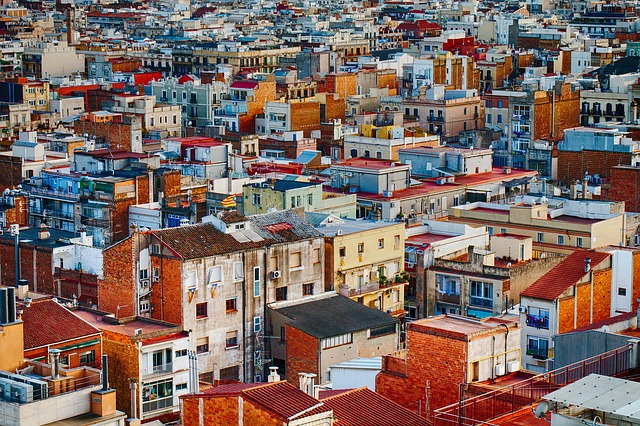
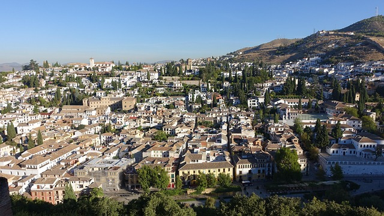
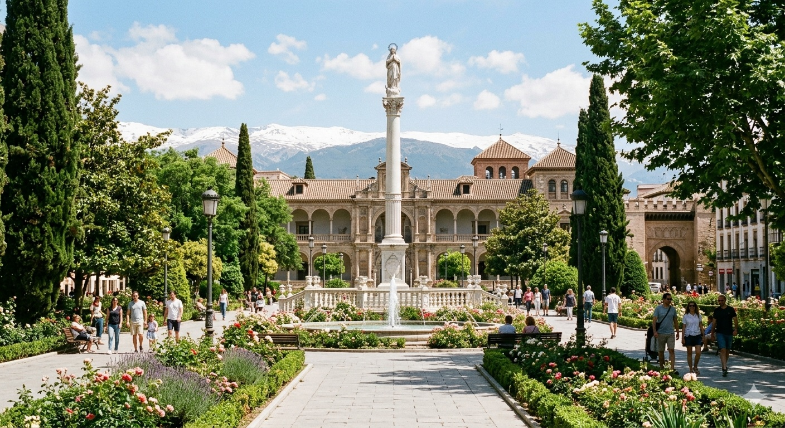
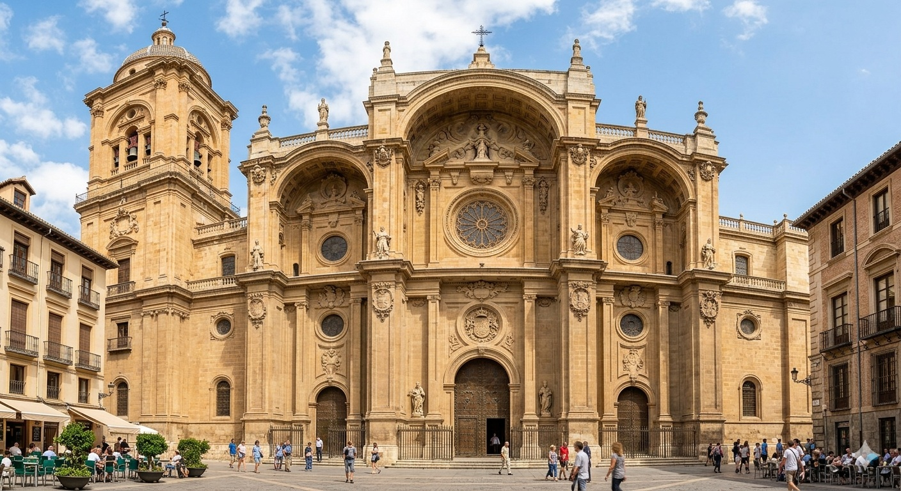
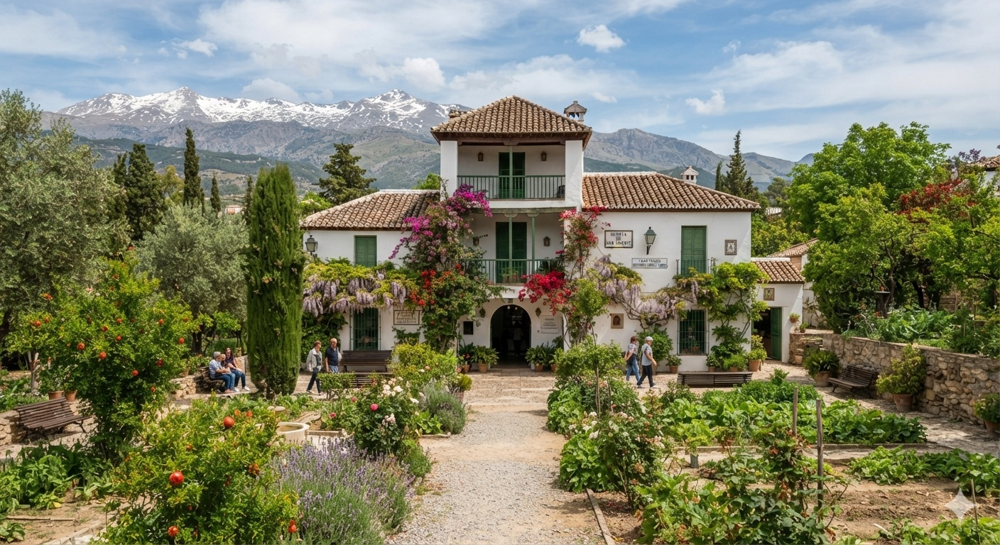
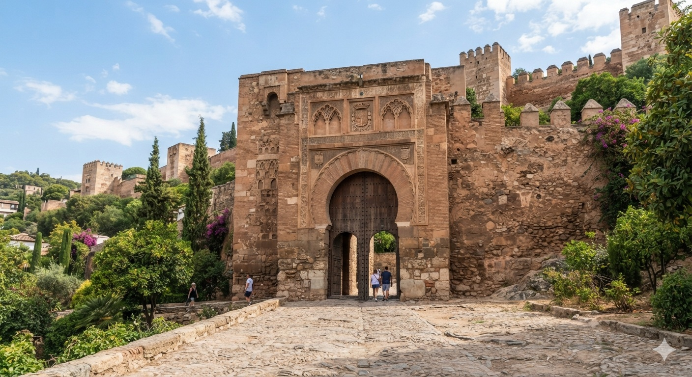
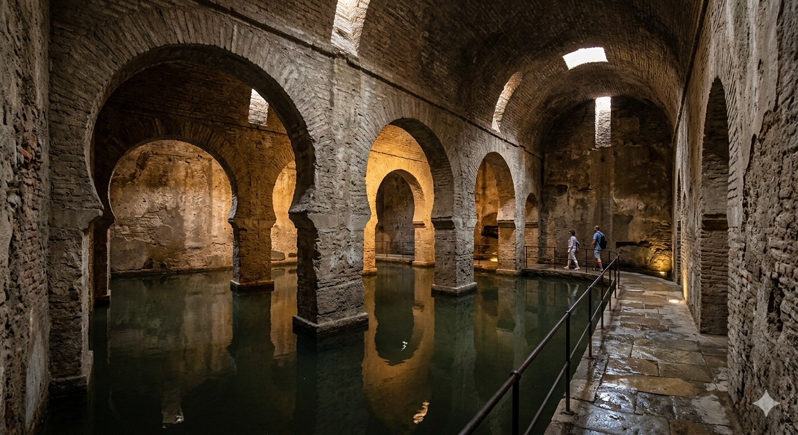

Distritos
Distrito La Chana
El barrio de la Chana, situado en la zona noroeste de Granada, es una de las áreas más vibrantes, castizas y populares de la ciudad autónoma andaluza. Originalmente nacido a mediados del siglo XX para acoger a la clase obrera, hoy destaca por su ambiente universitario, familiar y multicultural, dibde kis bkiques de pisos de ladrillo visto conviven con plazas llenas de vida vecinal. Su mayor seña de identidad es, sin duda, su famosa cultura del tapeo, siendo considerado por locales y visitantes como el templo de las tapas generosas y económicas de Granada.

Distrito Albaicín
El barrio del Albaicín, colgado sobre una colina frente a la imponente Alhambra, es el corazón histórico y el rincón más mágico y antiguo de Granada. Declarado Patrimonio de la Humanidad, este laberinto de calles estrechas, empedradas y empinadas conserva intacto su profundo aroma medieval y su pasado hispanomusulmán. Caminar por él es descubrir un paisaje urbano único, donde las fachadas blancas encaladas contrastan con el verde de los cipreses que asoman de los cármenes (sus tradicionales casas con huerto y jardín). El barrio vibra con el sonido del agua de sus aljibes, el bullicio de plazas emblemáticas como la de San Miguel Bajo o Plaza Larga, y regala algunas de las puestas de sol más famosas del mundo desde el Mirador de San Nicolás.

Distrito Beiro
El distrito Beiro, ubicado en la zona norte-central de Granada, es un área dinámica, moderna y residencial que destaca por ser uno de los grnades motores de servicios, transportes y salud de la ciudad. Vertebrado por grandes avenidas como la Avenida de la Constitución y la Avenida de Andalucía, este distrito combina zonas señoriales y tranquilas con un vibrante ambiente comercial y universitario. En su corazón late la Estación de Trenes de Granada (en el barrio de Pajaritos) y el histórico entorno de la Plaza de Toros, una de las zonas de ocio y tapeo más concurridas y con más solera de la capital. Además, Beiro es un punto de referencia vital para los granadinos gracias al hospital de traumatología, los extensos jardines del Triunfo y los campus universitarios que llenan sus calles de jóvnes y vida diaria.

Distrito Centro
El Distrito Centro, el corazón latente e histórico de Granada, es un deslumbrante mosaico donde la majestuosidad monumental y la intensa vida urbana se funden a la perfección. Presidido por la imponente Catedral de Granada y la Capilla Real, este distrito despliega un trazado que combina el encanto comercial de la Calle Mesones, el bullicio cosmopolita de la Calle Recogidas y el sabor tradicional de plazas emblemáticas como Bib-Rambla o la Plaza de las Pasiegas. Sus calles vibran a un ritmo único, impulsado por el comercio local, los cafés históricos y un constante flujo de visitantes y locales que llenan sus terrazas. Desde las intrincadas y exóticas callejuelas de la Alcaicería (el antiguo mercado de la seda) hasta las zonas más señoriales, el Centro condensa la esencia administrativa, cultural y comercial de la capital granadina en un entorno accesible y lleno de elegancia.

Rutas Culturales recomendadas
Ruta de Federico García Lorca
La Ruta de Federico García Lorca en Granada es un emocionante viaje literario y emocional que recorre los rincones que marcaron la vida, la genialidad y el trágico final del poeta más universal de la ciudad. El itinerario se sumerge en el centro histórico y sus alrededores, uniendo puntos tan emblemáticos como la Huerta de San Vicente, residencia de verano de la familia Lorca donde brotaron obras imperecederas como Bodas de Sangre, las cafeterías y plazas donde se reunía con la tertulia de "El Rinconcillo", y el centro cultural que hoy custodia su legado.
Caminar por esta ruta no es solo descubrir la Granada monumental, sino también mirar la ciudad a través de los ojos de Federico: una experiencia impregnada de poesía, música y memoria histórica que evoca la cara más brillante y, a la vez, más dolorosa del siglo XX granadino.

Ruta de Boabdil
La Ruta de Boabdil en Granada es un evocador itinerario histórico y paisajístico que recrea los últimos pasos del último sultán del Reino Nazarí antes de entregar las llaves de la ciudad a los Reyes Católicos en 1492. El recorrido parte de la propia Alhambra y desciende hacia el río Genil por la simbólica Puerta de los Siete Suelos, la misma que el monarca pidió sellar para que nadie más la cruzase tras su partida.
La ruta se adentra en la historia y la leyenda al avanzar hacia el sur de la capital granadina, guiando al viajero por hitos monumentales como la Ermita de San Sebastián y conectando con el mítico puerto de montaña conocido como el Suspiro del Moro, el lugar exacto donde, según el mito, Boabdil se volvió a contemplar la ciudad por última vez y lloró la pérdida de su amado reino.

Ruta de los Aljibes
La Ruta de los Aljibes en Granada es un cautivador itinerario arqueológico y urbano que invita a descubrir el ingenioso sistema de abastecimiento de la agua de la época hispanomusulmana, el cual sigue oculto a plena vista en el subsuelo de la ciudad. El recorrido se concentra principalmente en el laberinto blanco del barrio del Albaicín, uniendo depósitos medievales tan emblemáticos como el Aljibe del Rey, el más grande e importante de la capital, el Aljibe de la Plaza Larga o el de San Miguel Bajo.
Caminar por esta ruta es sumergirse en la vida cotidianan del antiguo Reino Nazarí, donde estas estructuras no solo cumplían una función vital de salud pública, sino que también era el epicentro social de cada plaza y mezquita; un paseo fresco, sonoro y nostálgico que regala una perspectiva única de la ingeniería hidráulica andalusí.
